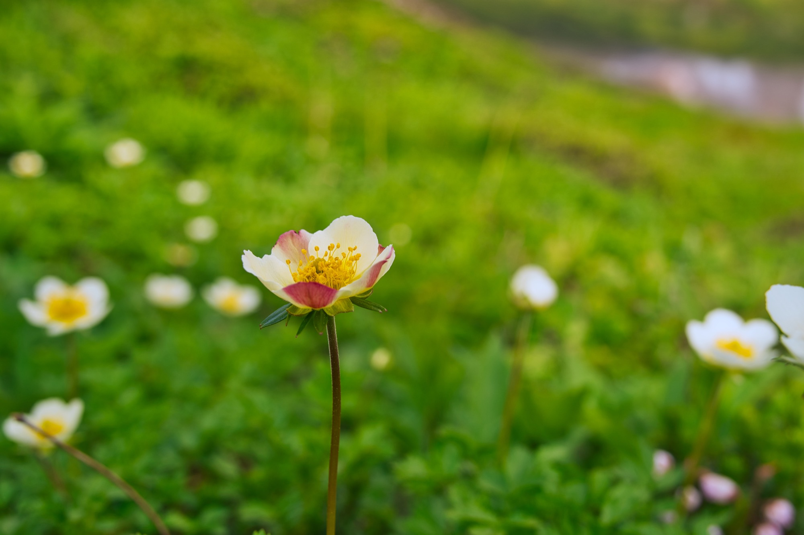

大雪山国立公園は南北63km、東西59kmに及ぶ日本最大の国立公園で北海道の中央に位置する。「大雪山」は一つの山の名前ではなく、北海道最高峰の旭岳などから成る大雪火山群を指す。広義では十勝岳を主峰とする十勝岳連保、然別湖周辺の然別火山群、石狩岳を始めとする石狩連峰など東大雪の山々を併せての総称であり、大雪山国立公園はこれらの包括している。総面積の約22万7千haが神奈川県の面積に匹敵すると言えば、その広大さがわかるだろう。
国立公園指定の理由は、「広大な原始山岳環境」であり、かつてアイヌの人々が「ヌタクカウシュペ（川が曲がりくねった場所の上にいつもあるもの）」「カムイミンタラ（神々の遊ぶ庭）」と表現したのも、その雄大さと美しさへの賛美であった。
大雪山は標高2000m前後の山々が連なっているが、高緯度に位置するため、本州の3000m級の山と同等の山岳環境にある。森林限界は約1500mと低く、ここから上部に高山帯が広く展開している。
特に山頂部付近では、夏になると多くの多彩な高山植物の「お花畑」が広がる。その種類は200種類以上と言われている。キバナシャクナゲ、エゾノツガザクラ、チングルマ、イワブクロなどが群生し、その美しさをスケールで登山者を楽しませてくれる。
豊かで作用な自然環境を有する大雪山には、当然ながら様々な動物が暮らしている。哺乳類ではヒグマやエゾシカ、キタキツネなどはもちろん、エゾシマリス、エゾユキウサギ、エゾオコジョなど中小型の種も多数生息する。